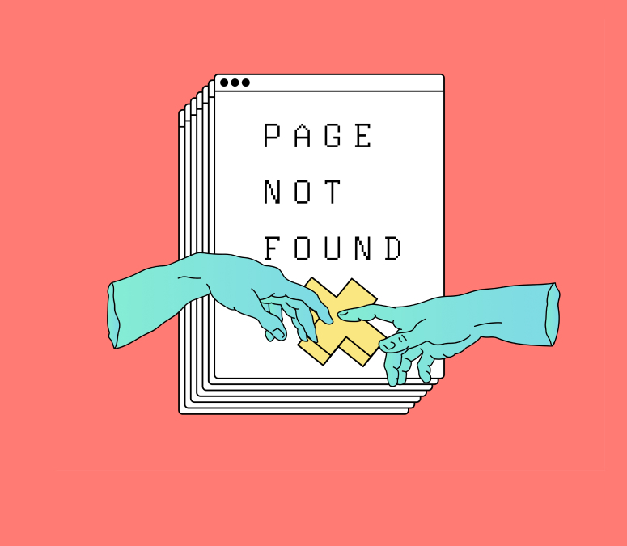

<ion-header [translucent]="true">
  <ion-toolbar>
    <ion-back-button slot="start"></ion-back-button>
    <ion-title>Error404</ion-title>
  </ion-toolbar>
</ion-header>

<ion-content >
  
</ion-content>
